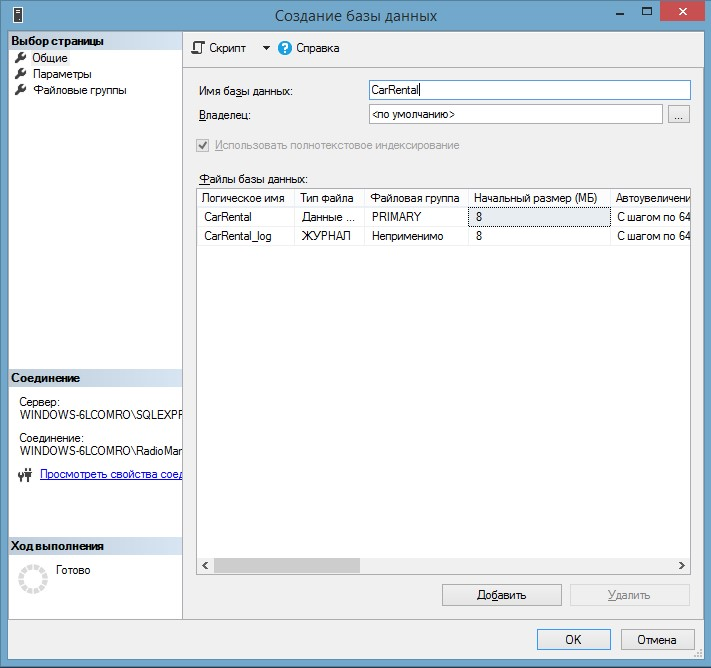
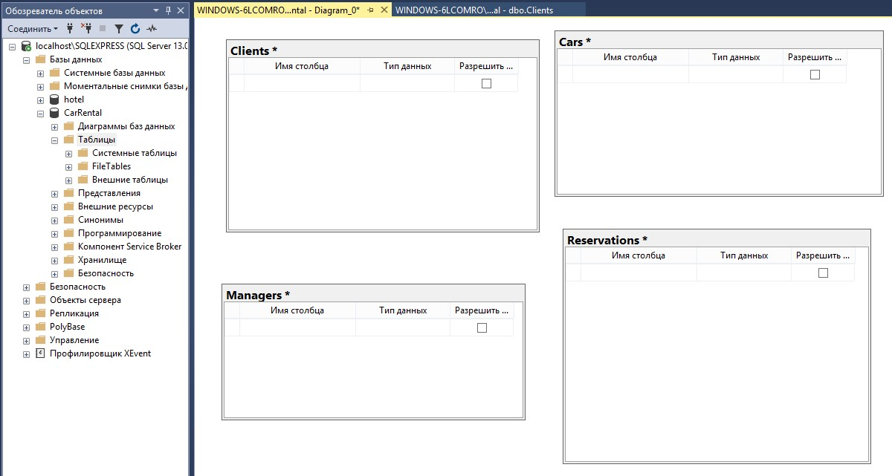

Базы данных и правила их создания
Разрабатываемые нами программные решения предполагают работу с большим объемом информации, которую очень важно хранить в едином по структуре и стилистике виде. Эта информация хранится в базе данных и может постоянно пополняться. От того, как часто это делается, зависит ее актуальность.
Базы данных, как способ хранения больших объемов информации и эффективного манипулирования ею, используются практически во всех областях человеческой деятельности. В них хранят документы, изображения, сведения об объектах недвижимости, физических и юридических лицах и прочие данные, с которыми необходимо работать в рамках предметной области.
При этом, вся информация не хранится в каком-то обобщенном виде, а разбивается на таблицы, каждая из которых отвечает за определенный объект предметной области. Чем больше данные обособляются в таблицы, тем выше вероятность избежать дублирования информации и захламления базы данных, а также сокращает время и ресурсы на поиск необходимых данных
MS SQL Management Studio
ПО для управления базами данных. Основные элементы интерфейса.
Создание новой базы данных
1. Запускаем MS SQL Management Studio
А) Подключаемся к серверу:
Имя сервера: localhost\SQLEXPRESS
Проверка подлинности: Проверка подлинности Windows
Б) Жмем Соединить. Открывается список баз данных сервера
2. Создаем новую базу данных


3. Определяем основные сущности и создаем таблицы.
На основании предоставленной диаграммы ресурсов добавим таблицы в базу данных.
Создаем таблицы.
Существует несколько способов:
А) дизайнер таблиц
Б) диаграмма БД
Создаем таблицы клиентов (Clients), менеджеров (Managers), автомобилей (Cars), бронирований (Reservations).

4. Добавляем поля в таблицы:
А) Таблица Clients
- Код клиента (id)
- ФИО клиента (Name)
- Дата рождения (Birthdate)
- Серия и номер паспорта(Passport)
- Номер водительского удостоверения (Driverid)
Б) Таблица Managers
- Код менеджера (id)
- ФИО менеджера (Name)
- Уникальный код менеджера (Code)
В) Таблица Cars
- Код автомобиля (id)
- Номер автомобиля (Number)
- Марка автомобиля (Model)
- Цвет автомобиля (Color)
- Стоимость бронирования (Cost)
Г) Таблица Reservations
- Код бронирования (id)
- Дата и время бронирования (DateTime)
- ID клиента (ClientID)
- ID менеджера (ManagerID)
- ID автомобиля (CarID)
- Дата и время получения автомобиля (GetDateTime)
- Уникальный код для получения(GetCode)
5. Расставляем первичные ключи
Важно
Первичный ключ — поле, которое уникально характеризует запись (строку) в таблице.
6. Устанавливаем типы данных
- ФИО клиента — текстовый тип данных
- стоимость бронирования — числовой
- дата и время бронирования — тип datetime
- и т. д. (на скриншоте)
7. Устанавливаем обязательность или необязательность поля.
В третьем столбце есть маркер, отвечающий за обязательность поля. В случае, если мы отметим его галочкой, поле будет необязательным при заполнении в таблицу.
Также необходимо добавить дополнительные поля для хранения логинов и паролей клиентов и менеджеров, так как наше приложение будет поддерживать регистрацию и авторизацию.
8. Устанавливаем связи между таблицами
Чтобы связать таблицу клиентов и бронирований, в таблицу Reservations необходимо добавить специальное поле — внешний ключ (в нашем случае это ClientID), который по типу совпадает с тем, что является первичным ключом в таблице Clients.
Далее от первичного ключа таблицы Reservations ведется связь к внешнему ключу таблицы.
9. Добавляем данные. Настраиваем автоинкременты.
Для того, чтобы не вести учет количества порядковых номеров, в настройках поля можно установить автоматическое определение значения поля при добавлении записи. Например, если в таблице есть 3 записи с номерами от 1 до 3, то следующая запись автоматически будет иметь номер 4.
10. Сохранение БД и создание скрипта
Все созданные базы данных хранятся на сервере. Чтобы перенести базу данных на другой сервер, необходимо правильно ее сохранить. Один из методов переноса - создание скрипта базы данных.
В дополнительных настройках указываем "Типы данных для внесения в скрипт" как "схема и данные".
В данном случае выполнение скрипта приведет к восстановлению структуры таблиц и переносу записей из вашей базы данных.
Так что его можно использовать не только для переноса базы на другой сервер, но и для хранения резервных копий предыдущих состояний базы данных.
Итоги
Подведем итог сегодняшнего занятия. Создание базы данных — важный этап при разработке программного решения. В ней хранится большая часть информации, с которой взаимодействует программное решение. Грамотно спроектированная база данных позволит без особых проблем работать с данными в будущем приложении, быстро получать требуемую информацию, и сократит число строк кода для реализации этих функций.